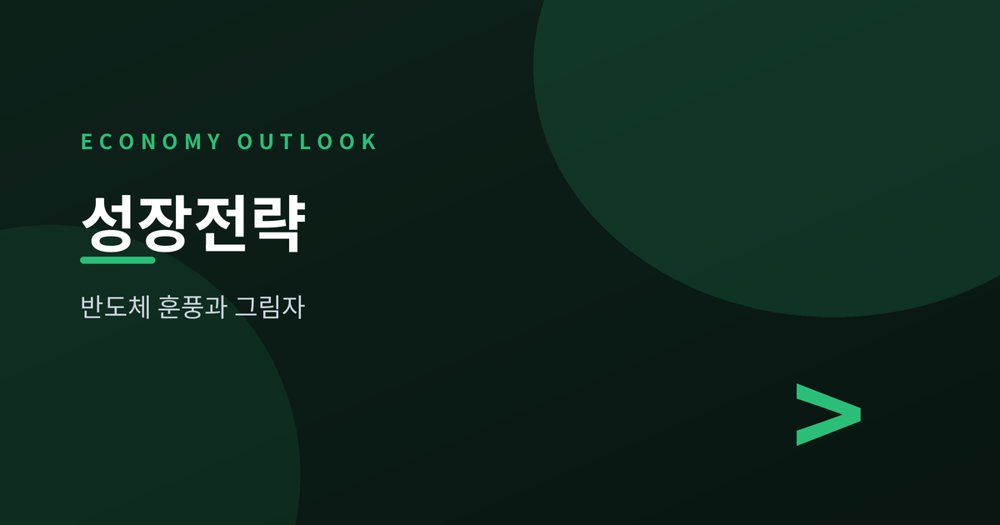
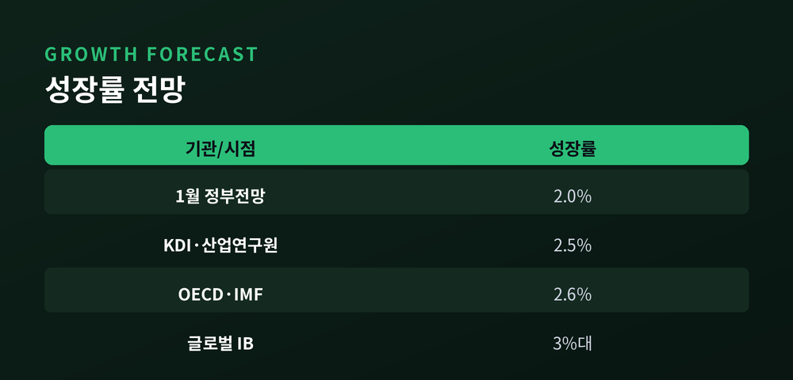
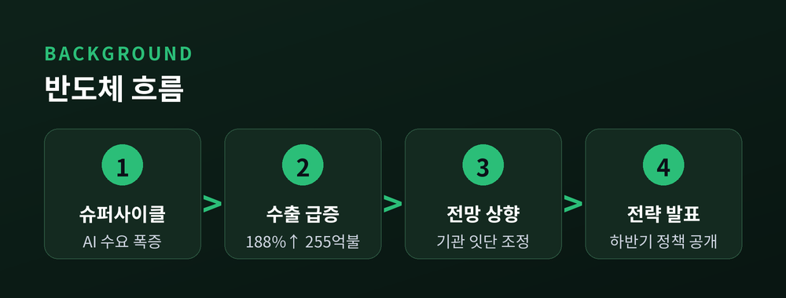
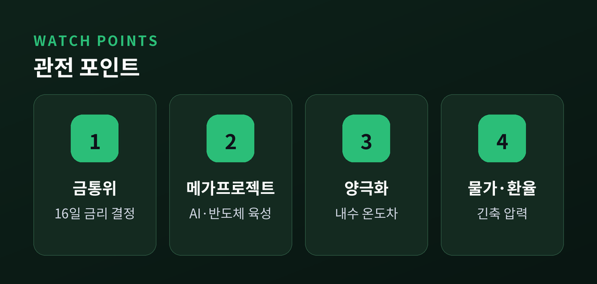
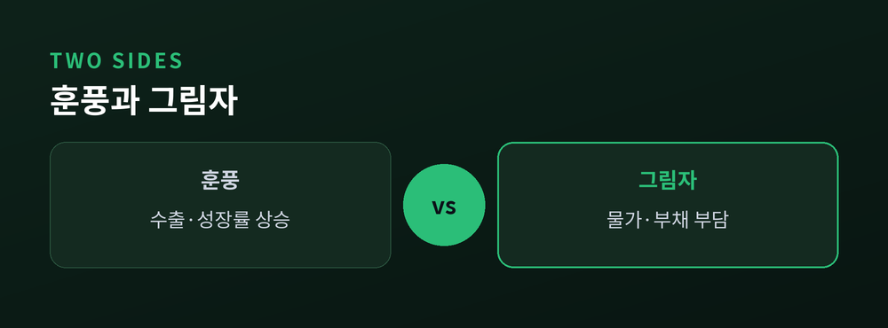

반도체 훈풍과 성장률 상향의 명암

정부가 하반기 경제성장전략을 곧 발표합니다. 7월 13일부터 17일 사이 국무회의 보고를 거쳐 공개될 예정이며, 구윤철 경제부총리 겸 기획재정부 장관은 "경제 대도약 원년"을 목표로 삼겠다고 밝혔습니다. 이번 발표의 핵심은 올해 성장률 전망치 상향과 반도체 중심 산업 육성 방안입니다.
반가운 소식이지만 마냥 웃을 수만은 없습니다. 성장률이 오르는 동시에 물가와 금리, 가계부채라는 부담도 함께 커지고 있기 때문입니다. 무슨 일이 벌어지고 있는지, 왜 중요한지, 앞으로 무엇을 지켜봐야 하는지 짚어봅니다.
정부는 1월 발표한 '2026년 경제정책방향'에서 올해 실질 성장률을 2.0%로 제시한 바 있습니다. 그런데 반도체 경기가 예상보다 빠르게 살아나면서, 이번 하반기 경제성장전략에서는 이 전망치를 큰 폭으로 올릴 것으로 관측됩니다.
구윤철 부총리는 소셜미디어를 통해 최근 국내외 기관들이 한국 경제 성장전망을 앞다투어 상향하고 있다고 언급했습니다.
"OECD와 IMF는 2.6%로 상향 조정했고, 글로벌 투자은행들은 3%대까지 전망하고 있습니다." — 구윤철 경제부총리 (7월 8일, X)
이번 전략에는 인공지능과 반도체를 축으로 한 '3대 메가프로젝트', 투자·소비 진작 대책, 지역균형발전을 위한 '5극 3특' 전략의 실행 방안이 담길 것으로 전망됩니다. 잠재성장률을 끌어올리는 동시에 양극화 대응까지 아우르겠다는 구상입니다.

성장률 상향의 배경에는 반도체 수출 호조가 자리하고 있습니다. 올해 상반기 반도체 수출은 전년 동기 대비 160%를 웃도는 증가율을 기록했고, 6월 중순 기준으로는 188% 급증한 255억 달러에 달했습니다. 전체 수출에서 반도체가 차지하는 비중도 40% 선을 넘어섰습니다.
인공지능 반도체 수요가 폭발적으로 늘면서 메모리 업황이 이른바 '슈퍼사이클'에 진입했다는 평가가 나옵니다. 이런 흐름을 반영해 한국개발연구원과 산업연구원은 올해 성장률을 2.5% 안팎으로 내다봤고, IMF는 7월 세계경제전망에서 한국 성장률 전망치를 기존보다 0.7%포인트 올려 2.6%로 제시했습니다. 서로 다른 기관이 비슷한 시기에 나란히 전망치를 높였다는 점에서 반도체발 훈풍이 통계로도 확인되는 셈입니다.
미국의 관세 인상 등 통상 여건이 녹록지 않은 가운데서도 수출이 견조한 증가세를 보이고 있다는 점 역시 이번 상향 조정에 힘을 실어주는 요인입니다.

성장률 상향은 단순한 숫자 조정이 아닙니다. 정부가 내세우는 '경제 대도약'이라는 표현에서 보듯, 이번 전략은 잠재성장률 반등이라는 구조적 목표와 맞닿아 있습니다. 반도체 한 업종의 호황이 경제 전반의 체질 개선으로 이어질 수 있을지가 관건입니다.
동시에 이 훈풍은 통화정책에도 영향을 주고 있습니다. 한국은행 금융통화위원회는 7월 16일 회의에서 기준금리를 현재 2.50%에서 2.75%로 올릴 것이라는 관측이 우세합니다. 실현될 경우 2023년 1월 이후 약 3년 6개월 만의 금리 인상입니다. 성장세 개선과 함께 물가가 3%대로 올라선 점, 수도권 집값 상승, 가계대출 증가, 원화 약세 등이 긴축 전환의 배경으로 꼽힙니다.
성장률은 오르는데 금리와 물가 부담도 함께 커지는 구도입니다. 반도체 수출 증가가 체감 경기 개선으로 이어지지 않는다면, 통계상 성장과 국민이 느끼는 살림살이 사이의 괴리가 오히려 벌어질 수 있습니다.

시장에서는 이번 회의에서 금리를 올린 뒤 10월경 추가 인상을 거쳐 연말 기준금리가 3.0%까지 이를 것이라는 전망도 나옵니다. 다만 이는 아직 확정된 수치가 아니라 전문가 다수의 관측이라는 점을 유의할 필요가 있습니다.
정부의 하반기 경제성장전략 역시 국무회의 보고와 발표 전까지는 세부 수치와 정책이 조정될 수 있습니다. 반도체 편중 성장이 지속 가능한지, 내수와 고용 등 다른 지표가 함께 개선되는지, 그리고 금리 인상이 가계와 기업 대출 부담에 미칠 영향까지 두루 지켜봐야 할 시점입니다.
이 글은 특정 투자 판단이나 권유가 아니라 정보 제공을 목적으로 작성되었습니다. 구체적인 의사결정 전에는 발표되는 원문 자료와 전문가 의견을 함께 확인하시기 바랍니다.

참고 소스